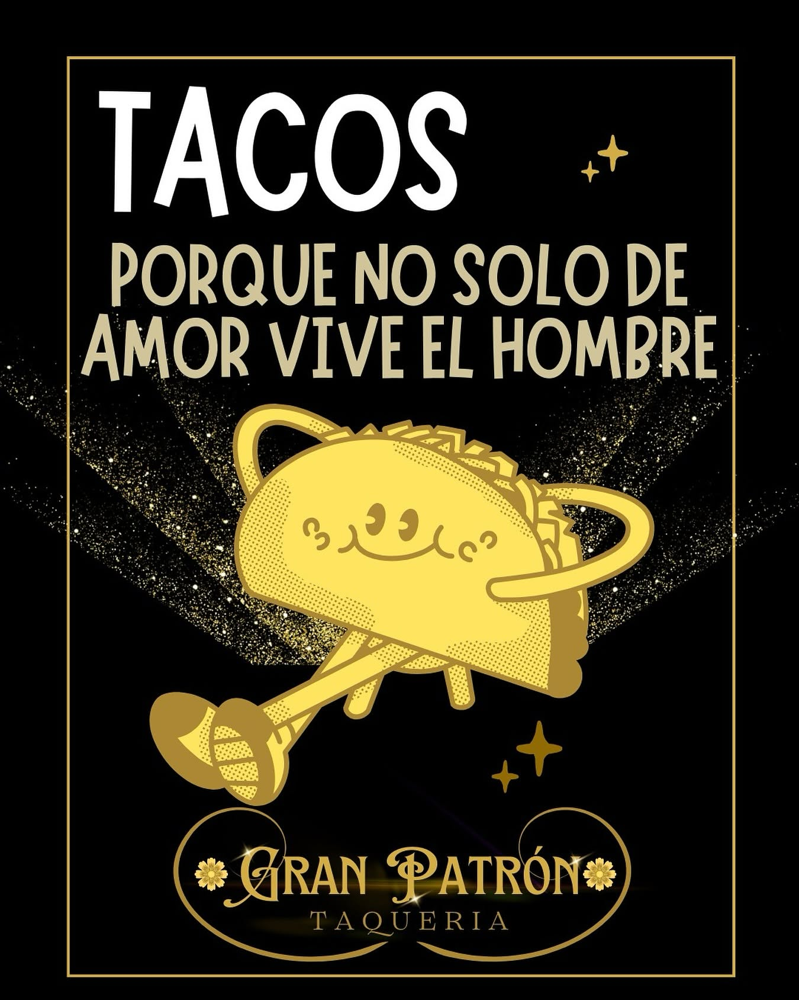
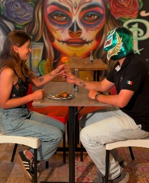
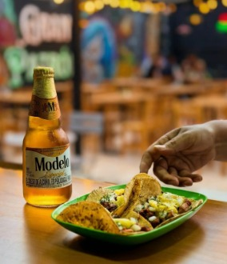
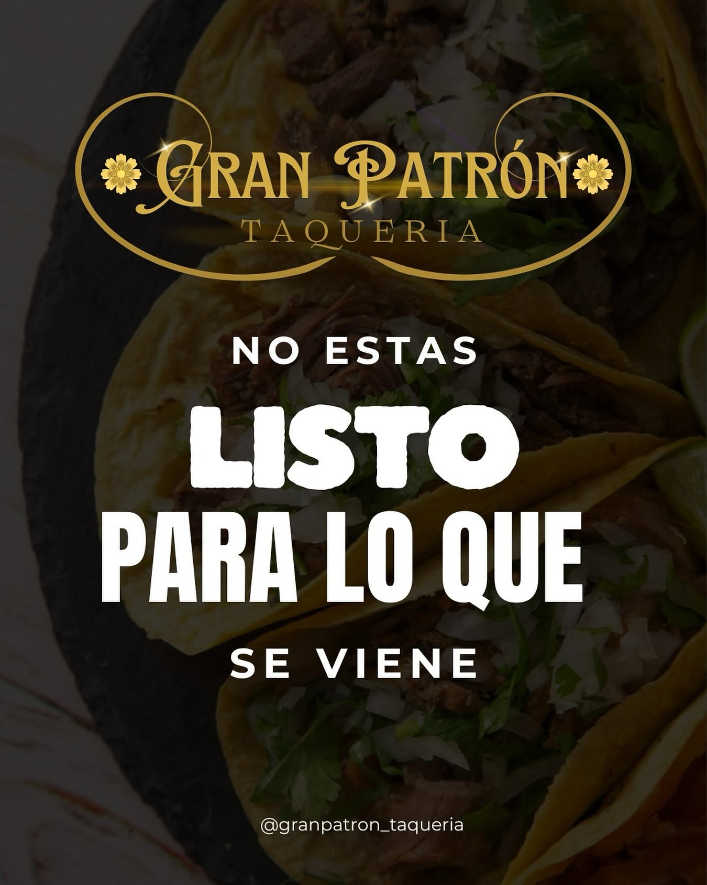
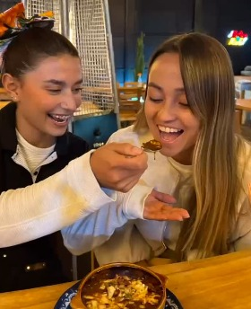
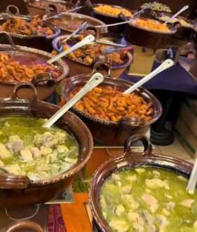
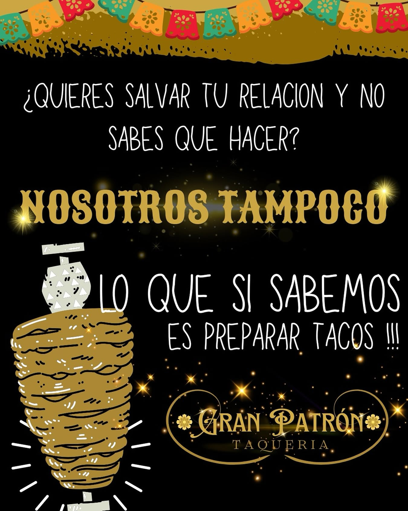
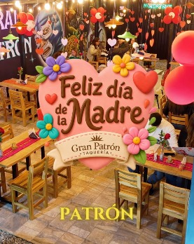
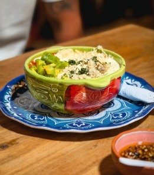

Arma tu pedido
y te lo llevamos a domicilio 🛵
Tu pedido está vacío. El menú está aquí arriba, esperándote. 👆
Volver al menúTu pedido va a domicilio 🛵 — la dirección, proteína y salsas los confirmas en el chat.
Las salsas de la casa
elige tu nivel de valentía
Todas acompañan tus tacos sin costo. La Fantasma no perdona: avisado quedas.
Un pedacito de México
en la sabana

— filosofía oficial de la casa
THE WORLD IS YOURS
y empieza con un taco en la mano
Lo que pasa en la taquería
…se publica en Instagram
🌮 TAQUERÍA GRAN PATRÓN | 🇲🇽
📍 COTA CUNDINAMARCA 🇨🇴
LOS PATRONES DEL TACO 👑








Cómo llegar
Nos encuentras en Cl. 11 #9-36, Cota, Cundinamarca — a un antojo de distancia de Bogotá. Patio al aire libre, sombrillas y estufas para las noches de sabana.
Horarios y eventos del fin de semana: @granpatron_taqueria